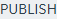
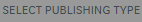
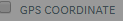
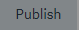
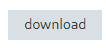

from sikuli import * import os import sys import module_CommonImagesSet def publishDrawing(): click(Pattern().targetOffset(1,0)) # mark the region. r = find(Pattern().targetOffset(1,0)).left(50).right(1000).below(1000) # select MAP option. r.click(Pattern().similar(0.80).targetOffset(-16,-1)) r.click(Pattern().targetOffset(1,0)) # select GPS Coordinates option. r.click(Pattern().targetOffset(-53,-2)) r.click(Pattern().targetOffset(1,0)) #select DWG/PDF dropdown. r.click(Pattern().targetOffset(1,0)) wait(0.5) # select PDF. r.click(Pattern().targetOffset(-6,46)) # select Publish. r.click(Pattern().targetOffset(1,0)) r.wait(Pattern().targetOffset(1,0), 100) if not r.exists(): Debug.log("Publish Failed.") exit() else: r.click() # wait for the download to complete. wait(4)